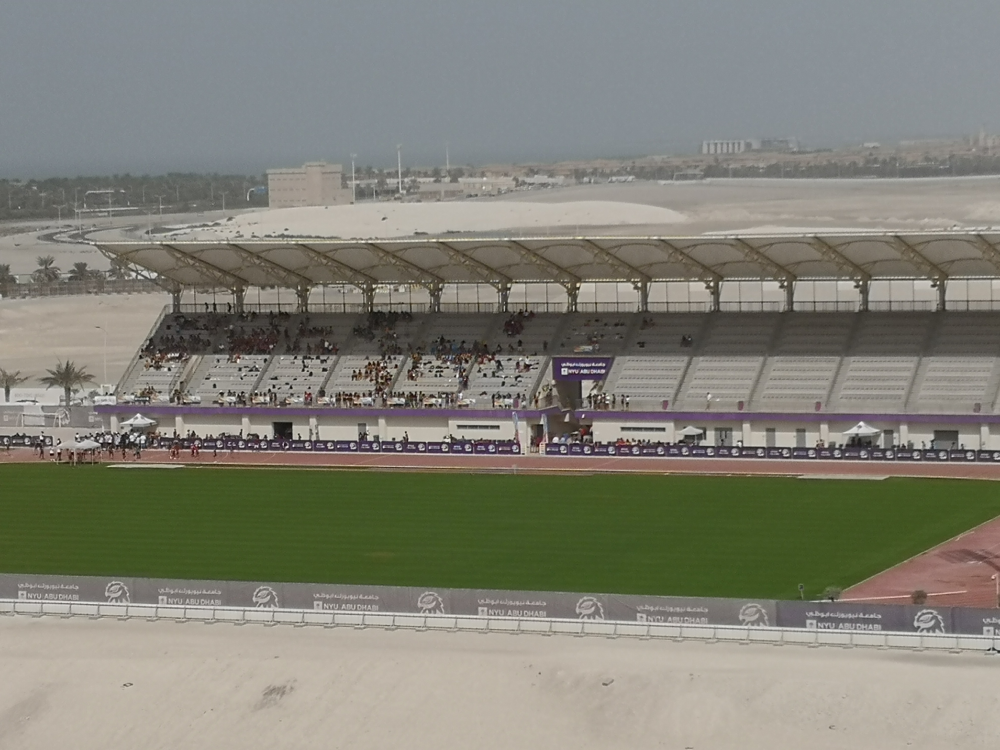
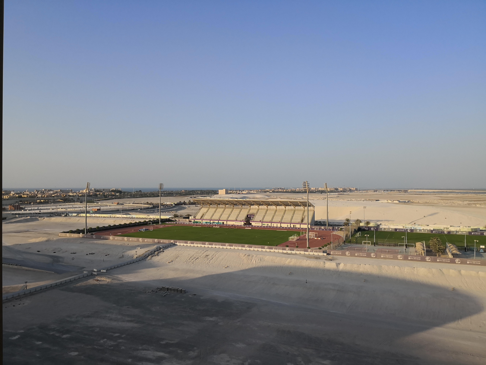

The stadium of NYU Abu Dhabi campus has its tribune entirely covered to provide shade.
  Abu Dhabi, UAE. Image credit: GP.It is not meant to protect from the rain since such an eventuality is virtually non existing. But in a hot tropical climate such as Abu Dhabi a shaded terrace is imperative: for many months a year sitting outdoor in the sun is simply impossible, hence the mandatory roof.
Problem is the stands have been placed on the north side of the field, with the seats facing south. Such a decision ignores a millennia old practice that prescribes to orient amphitheaters, arenas and stadiums so that the audience is in the shade as much as possible (at least that’s the norm for hot climates). With a stand facing south the roof starts to loose efficacy around 10am. And by noon all seats are in the sun and that situation will not change through the day. Apparently the decision to place the stands on north side was made so that the field could be seen from the residential buildings on campus. A lovely, scenic, decision that one can appreciate only when the field is used for night games and the terraces are crowded. During daytime it is a different story. We’d rather see the back of a tribune than seeing the spectacle of people moving higher and higher to get some shade, deserting what were supposed to be the best seats.